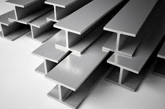
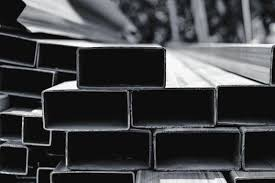
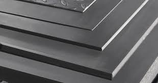
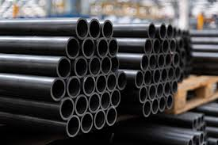
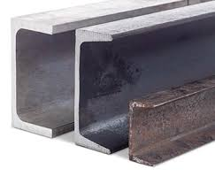
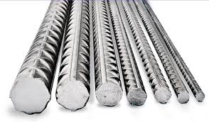

Inicio
Norton Metals actualmente presta servicios a los mercados de Texas, Oklahoma, Luisiana y Arkansas. Norton Metals se inició en la industria siderúrgica en 1952 y es un importante proveedor de acero consolidado en el área de Dallas-Fort Worth. El 28 de noviembre de 2008, JMS Russel Metals Corp. adquirió Norton Metals. El nombre legal de esta unidad operativa es Norton Metals, una división de JMS Russel Metals Corp.
Nosotros
Nos comprometemos a brindar a nuestros clientes el más alto nivel de servicio y calidad en cada pedido. Nuestros empleados se dedican a garantizar que sus necesidades se cumplan a diario.
Nuestros Productos


Placas de Aleación
Cortes a medida con precisión láser para proyectos especializados.
Ver detalles
Tubos
Rendimiento y fiabilidad en cada tramo. Este tubo de acero combina una estética limpia con una integridad estructural inigualable.
Ver detalles
Perfil C de Acero
El C-Channel es un componente esencial en la construcción estructural y mecánica.
Ver detalles
Varilla Corrugada
Acero de refuerzo con superficie corrugada para máxima adherencia al concreto. Esencial en vigas, columnas y cimentaciones de alta resistencia.
Ver detallesInformacion de Contacto
¿Tienes alguna duda o requieres una cotización? Escríbenos.